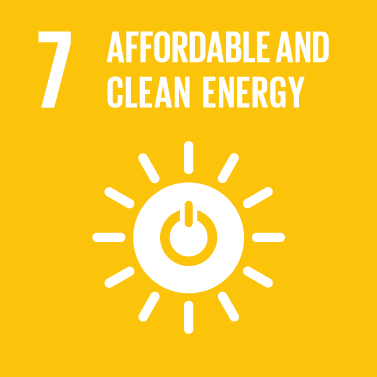

Goal 7: Ensure access to affordable, reliable, sustainable and modern energy for all
Energy is central to nearly every major challenge and opportunity the world faces today. Be it for
jobs, security, climate change, food production or increasing incomes, access to energy for all is essential.
Sustainable energy is opportunity – it transforms lives, economies and the planet.
UN Secretary-General Ban Ki-moon is leading a Sustainable Energy for All initiative to ensure universal access
to modern energy services, improve efficiency and increase use of renewable sources.

Goals Targets
1) By 2030, ensure universal access to affordable, reliable and modern energy services.
2) By 2030, increase substantially the share of renewable energy in the global energy mix.
3) By 2030, double the global rate of improvement in energy efficiency.
4) By 2030, enhance international cooperation to facilitate access to clean energy research and technology,
including renewable energy, energy efficiency and advanced and cleaner fossil-fuel technology, and promote
investment in energy infrastructure and clean energy technology.
5) By 2030, expand infrastructure and upgrade technology for supplying modern and sustainable energy services for
all in developing countries, in particular least developed countries, small island developing States, and
land-locked developing countries, in accordance with their respective programmes of support.